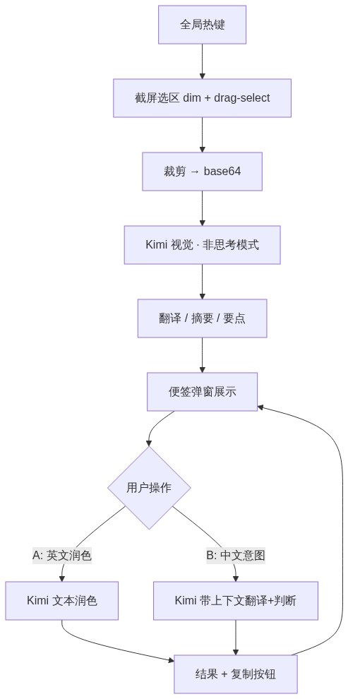

Purpose: Stack, flows, and API facts for building said-wat.
Status: Current
Verified against: Alignment interview + Kimi API docs (platform.kimi.ai), 2026-08-09
Primary code: not yet created — greenfield
docs/knowledge/tech-conventions.md).https://api.moonshot.cn/v1 (Chinese platform — verified live 2026-08-10; the builder's key does NOT authenticate against api.moonshot.ai). Official openai Node SDK.MOONSHOT_API_KEY (or repo-root .env in dev); never in repo, never hardcoded.kimi-k2.6 in non-thinking mode (vision + text, thinking switchable).kimi-k2.7-code (builder's "Kimi 2.7") — thinking always on; reserved for hard screenshot interpretation.content array with type: "image_url" + base64 data URL (png/jpeg/webp/gif; keep ≤4K).
desktopCapturer, requires Screen Recording permission).settings-store.ts pattern, ~/.config/<app>/…).